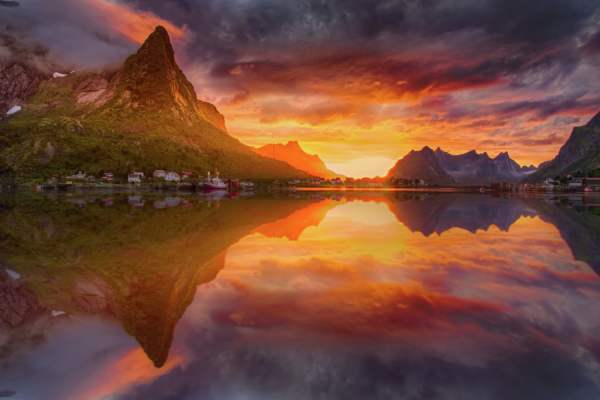
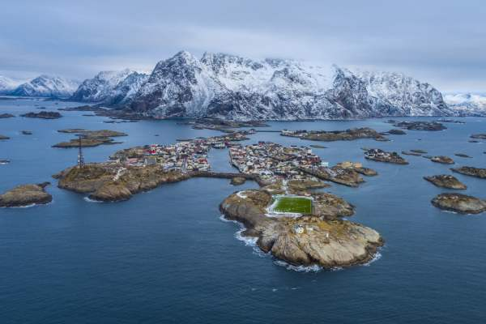

Времена года в Норвегии
Как гласит древняя легенда, название «Норвегия» происходит от древнескандинавского слова Norðrvegr, что означает ‘путь на север’. Это название было дано протяженному и скалистому берегу, поскольку он практически не замерзал зимой.
Весна
В марте, апреле и мая дни повсюду становятся длиннее, а погода – теплее. Снег тает, превращаясь в тысячи водопадов, на лугах расцветают цветы, а на лицах местных жителей – улыбки, так что весна в Норвегии – время по-настоящему незабываемое..
Лето
В июне, июле и августе дни длинные, а ночи короткие. К северу от Полярного круга солнце светит круглые сутки. Летом погода в Норвегии резко не меняется, а температура воздуха комфортная как на море, так и на суше.

Осень
В сентябре, октябре и ноябре дни становятся короче, воздух наполняется морозцем, урожай приносит новые вкусы, а окрестная природа играет красками. Осень – идеальная пора для отдыха в большом городе, который в Норвегии легко совместить с походом по горам или посещением спа.
Зима
Зима – это весело! Да, дни в это время года короче, зато вы можете покататься на лыжах или выбрать другие виды зимних развлечений. В Арктике вас ждут киты и северное сияние.